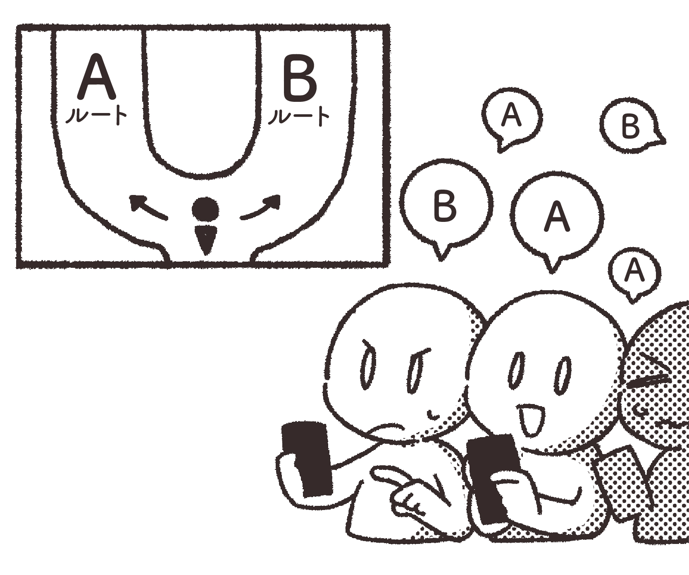
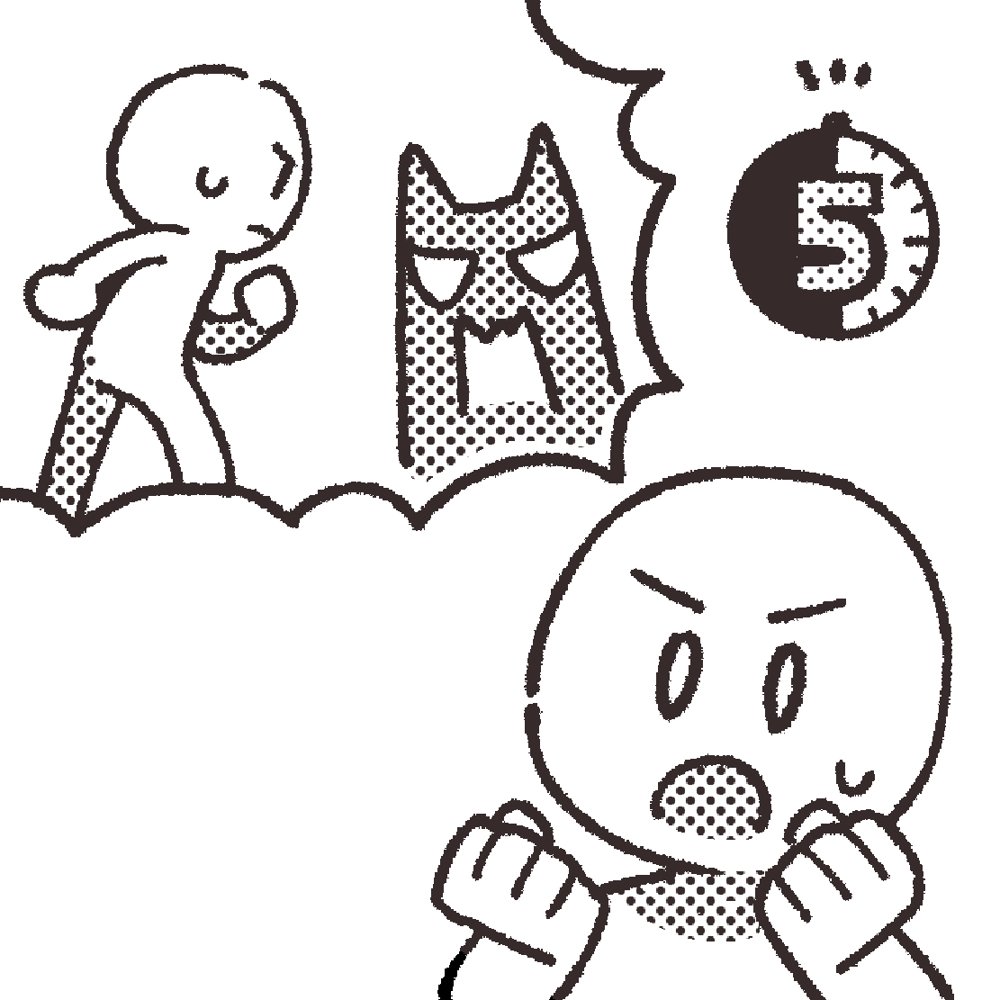

インタラクティブ映画の
魅力と特徴
一般的な映画と比較して、どんな魅力や特徴があるかを紹介します。
目次
気になる項目をクリック！
リアルタイムで変化するストーリー

分岐点で下す判断が、キャラクターの運命やエンディングに直結します。
「誰を信じるか」「どこへ向かうか」「何を伝えるか」……。
一瞬の判断が想像もしなかった展開を生み出します。
また、劇場型のインタラクティブ映画では観客の投票によって物語が決まるライブ感も楽しめます。
物語への没入感

この映画では、あなたはただの観客ではなく、登場人物の運命に深く関わります。
あなたの選択に、キャラクターは喜び、怒り、時に絶望する。
間違えたときの後悔。救えたときの安堵。
感情の揺れが、まるで自分の体験のように心を動かされます。
これまでの“観るだけの映画”では得られない、没入感があります。
何度でも楽しめる映画体験
インタラクティブ映画に“正解”はありません。
違う選択をする度に違うストーリー、違う結末、そして違う感情に出会えます。
スマートフォンアプリを使用して「自分が見たエンディング」「達成した実績(ミッションのようなもの)」を記録して、コレクション要素を楽しめる作品もあります。
「あのとき、違う選択をしていたら？」
一度だけでは終わらない。何度でも楽しめる映画体験です。